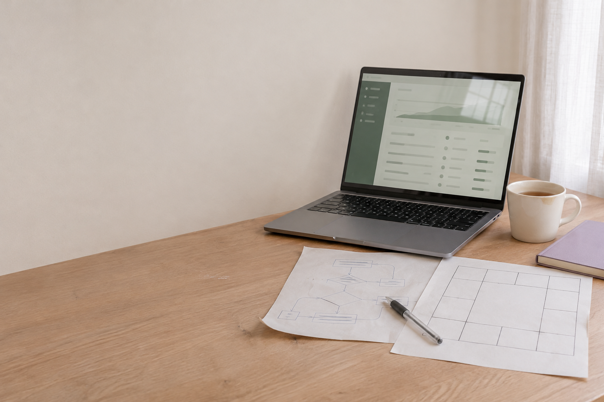
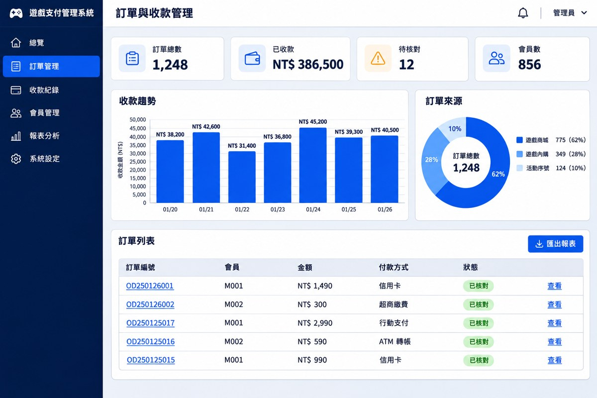
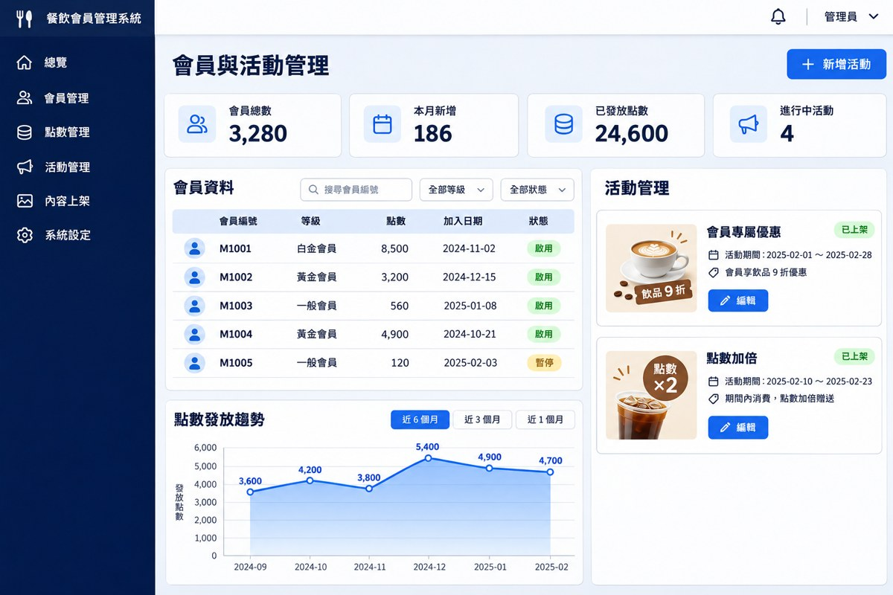

數位策略顧問 | 紫微命理諮詢
先聊聊，
先聊聊，
再把事情理清楚。
我幫你理順工作流程，少花時間在那些讓你覺得煩的事上。
我把命盤裡看到的方向說清楚，讓你做選擇時多一份參考。
你是不是也這樣
卡住的時候，心裡常常是這些聲音
關於工作
- 「同樣的事每天要加班重複做：回訊息、整理資料、做報表。」
- 「AI 工具買了、訂閱了，卻不知道怎麼用在自己的生意上。」
- 「想改善工作方式，但不知道該從哪個流程開始，也怕花錢做白工。」
我會陪你：找出最耗時的環節，先挑一個最值得改的，做成你和夥伴真的會用的流程。
關於人生
- 「做了好多年，突然開始懷疑：這真的是我想要的嗎？」
- 「想換跑道，卻說不清楚自己到底適合什麼。」
- 「重要的選擇一個接一個，希望自己做決定時更有底氣。」
我會陪你：用命盤看見你的特質與節奏，一起整理出下一步，讓選擇不只靠一時的情緒。
我做過的服務與經驗
7 年後端開發，資安和備份是我的基本功
7 年系統開發與維護
5 家跨產業的專案經驗
200 小時紫微斗數課程研習與實戰

01訂單、收款、會員，每一筆都對得上
遊戲公司收款系統：讓每一筆錢從哪裡來、去了哪裡，都查得到。
客人一直問同樣的問題？
參與線上即時客服系統開發，明白客服最累的是一整天重複回答。

03會員、點數、活動，不用再靠人工盯
連鎖餐飲員工 App 與管理後台，營運同事自己就能上架內容。
諮詢過的人這樣說
來自紫微命理諮詢的真實回饋
「就像有張自己專屬的地圖，趨吉避凶，徐徐前進」
「廣度就是我的創造力跟靈感連結」
「像朋友聊天一樣，心裡踏實了不少」